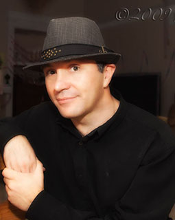

© 2016 ABKphoto | San Diego / California / USA |
 abkphoto@live.com |
abkphoto@live.com |  +1 858 480 9898
+1 858 480 9898
|  | Bio |
|---|---|
| I am very passioned about technology, so I finished University of Applied Sciences in Regensburg / Germany. In 2004 I was lucky enough to start working on the world's first cameras in the mobile phone. Which also ignited my passion for photography. That unique combination of having creative photography skills and engineering knowledge how camera works gives me a big advantage in solving problems as a photographer. But also my engineering carrier got a significant boost in form of understanding what features photographers want from the camera manufacturers! Win-Win! | |
| Photography Style | |
| Every photographer has his own style and personality in his images. I think the best way to describe myself is by drawing an analogy to "How do you drive your car?" I like to feel the curvy narrow mountain road ... driving up in a convertible ... fresh breeze in your hair ... taking deep breaths of thin air and feel the excitement about what's going to happen ahead! That's the way I shoot pictures. |

© 2016 ABKphoto | San Diego / California / USA | abkphoto@live.com | +1 858 480 9898